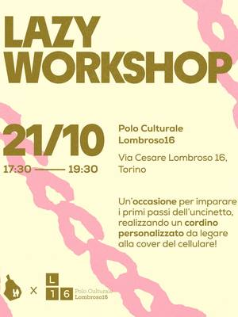
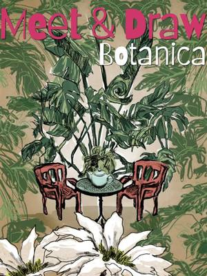
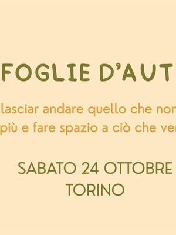
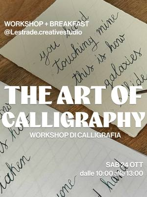
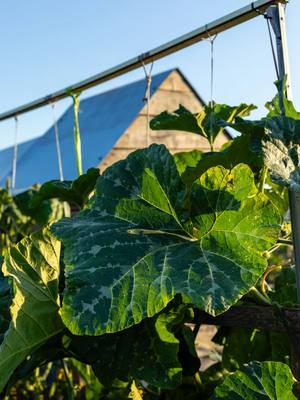
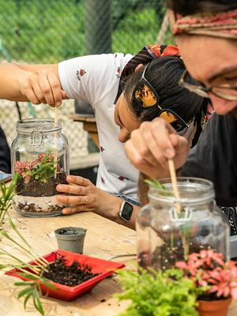
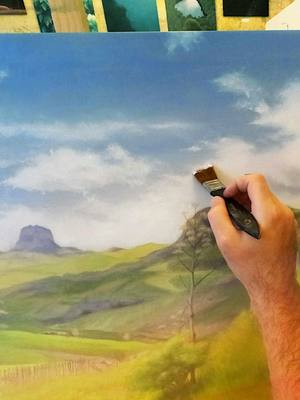

Workshop e corsi a Torino
Tutti i workshop, i corsi e le attività in arrivo a Torino città, dal Quadrilatero a San Salvario, da Vanchiglia a Barriera di Milano.
Cerca con tutti i filtri210 attività in arrivo · aggiornato il 21 ottobre 2026

mer21ottTessileLazy Workshop: cordino all’uncinettomercoledì 21 ottobre, 17:30–19:30San Salvario (TO)con Lazy Pear- mer21ottGiochiTorneo di briscola: serata amichevolemercoledì 21 ottobre, 18:30–23:30Lingotto (TO) · Gratiscon Arcade
 gio22ottCucinaCake & Chill: dipingi la tua tortagiovedì 22 ottobreCentro (TO)con Limaco’s Lab
gio22ottCucinaCake & Chill: dipingi la tua tortagiovedì 22 ottobreCentro (TO)con Limaco’s Lab gio22ottAltroScenografia del giardino: teatrino di cartagiovedì 22 ottobre, 16:00–20:00San Salvario (TO) · Gratiscon Beatrice Bandiera per Galleria Caracol
gio22ottAltroScenografia del giardino: teatrino di cartagiovedì 22 ottobre, 16:00–20:00San Salvario (TO) · Gratiscon Beatrice Bandiera per Galleria Caracol- gio22ottPittura e scritturaAperi-workshop: fiori in pittura acrilicagiovedì 22 ottobre, 18:00–20:00Borgo Po (TO) · · esauritocon Si Performance Artistiche per TObed
 gio22ottStampaWorkshop di cianotipia: stampa alternativagiovedì 22 ottobre, 18:30–20:30Vanchiglia (TO) · 25 €con Marta Rocchi per Il Nicchio di via Monti
gio22ottStampaWorkshop di cianotipia: stampa alternativagiovedì 22 ottobre, 18:30–20:30Vanchiglia (TO) · 25 €con Marta Rocchi per Il Nicchio di via Monti gio22ottCucinaLaboratorio di Halloween: dolci giapponesigiovedì 22 ottobre, 19:30Centro (TO)con Kintsugi con Tabete Market
gio22ottCucinaLaboratorio di Halloween: dolci giapponesigiovedì 22 ottobre, 19:30Centro (TO)con Kintsugi con Tabete Market gio22ottGiochiMasterland Night: gioco con gli autorigiovedì 22 ottobre, 20:00–23:30Lingotto (TO) · Gratiscon Arcade
gio22ottGiochiMasterland Night: gioco con gli autorigiovedì 22 ottobre, 20:00–23:30Lingotto (TO) · Gratiscon Arcade ven23ottTessileLose Control: tappeto collettivo in tuftingvenerdì 23 ottobreVanchiglia (TO)con Nodo Tufting Torino con Chiara Allione
ven23ottTessileLose Control: tappeto collettivo in tuftingvenerdì 23 ottobreVanchiglia (TO)con Nodo Tufting Torino con Chiara Allione- ven23ottCeramicaCrea la tua tazza: incisioni e rilievivenerdì 23 ottobre, 10:00–12:00San Salvario (TO) · 48 €con Pottery Lab con Rud
 ven23ottPer famiglieMerenda spaventosa: decorazioni di Halloweenvenerdì 23 ottobre, 16:00Cit Turin (TO) · 35 €con Scialabà
ven23ottPer famiglieMerenda spaventosa: decorazioni di Halloweenvenerdì 23 ottobre, 16:00Cit Turin (TO) · 35 €con Scialabà ven23ottMovimentoLa magia del cerchio: danza fusion al parcovenerdì 23 ottobre, 17:00–18:30San Salvario (TO) · Gratiscon Rossana Delmastro (Samar Academy) per BallaTorino
ven23ottMovimentoLa magia del cerchio: danza fusion al parcovenerdì 23 ottobre, 17:00–18:30San Salvario (TO) · Gratiscon Rossana Delmastro (Samar Academy) per BallaTorino- ven23ottAltroMasterclass: crea la tua lampadavenerdì 23 ottobre, 17:00Centro (TO)con Creative Cables
 ven23ottMovimentoJazz Street Dance: si balla sotto i porticivenerdì 23 ottobre, 17:00–19:00Centro (TO) · Gratiscon Dusty Jazz con BallaTorino
ven23ottMovimentoJazz Street Dance: si balla sotto i porticivenerdì 23 ottobre, 17:00–19:00Centro (TO) · Gratiscon Dusty Jazz con BallaTorino ven23ottGiochiDungeon Egizio: D&D al museovenerdì 23 ottobre, 18:30–22:00Centro (TO) · 6 €con Museo Egizio con Goblin
ven23ottGiochiDungeon Egizio: D&D al museovenerdì 23 ottobre, 18:30–22:00Centro (TO) · 6 €con Museo Egizio con Goblin ven23ottDegustazioniVino e vino: degustazione di vini naturalivenerdì 23 ottobre, 19:00San Salvario (TO) · 7 €con Casa del Quartiere di San Salvario con Augusta Fiera del Vino
ven23ottDegustazioniVino e vino: degustazione di vini naturalivenerdì 23 ottobre, 19:00San Salvario (TO) · 7 €con Casa del Quartiere di San Salvario con Augusta Fiera del Vino ven23ottGiochiGame Night: tre giochi da tavolo a puntivenerdì 23 ottobre, 20:00–23:30Lingotto (TO) · Gratiscon Arcade
ven23ottGiochiGame Night: tre giochi da tavolo a puntivenerdì 23 ottobre, 20:00–23:30Lingotto (TO) · Gratiscon Arcade
ven23ottPittura e scritturaMeet & Draw: disegno a tema botanicavenerdì 23 ottobre, 20:00Vanchiglia (TO) · Gratiscon Just Draw It
sab24ottPittura e scritturaCome foglie d’autunno: arteterapia per donnesabato 24 ottobre, 09:30–12:30Borgo San Paolo (TO) · 55 €con Ilaria Marracci con Silvia Ferrero sab24ottPer famiglieCrea il tuo decoro da paura: Halloweensabato 24 ottobre, 09:30–12:15Borgo Po (TO)con Centro Paideia
sab24ottPer famiglieCrea il tuo decoro da paura: Halloweensabato 24 ottobre, 09:30–12:15Borgo Po (TO)con Centro Paideia
sab24ottPittura e scritturaThe art of Calligraphy: pennino e inchiostrosabato 24 ottobre, 10:00–13:00Aurora (TO) · 35 €con Noemi Venturino per Le Strade Creative Studio sab24ottTessileShibori e indaco: tintura naturale blusabato 24 ottobre, 10:00–13:00San Donato (TO) · 55 €con Patrizia Berto (Startlap) per Orso Objetos
sab24ottTessileShibori e indaco: tintura naturale blusabato 24 ottobre, 10:00–13:00San Donato (TO) · 55 €con Patrizia Berto (Startlap) per Orso Objetos
sab24ottPianteOrticoltura biologica: lezione all’ortosabato 24 ottobre, 10:00–12:00Mirafiori (TO) · 20 € a lezionecon Orti Generali sab24ottCucinaKombucha Workshop: tè fermentatosabato 24 ottobre, 11:00Vanchiglietta (TO) · 24 €con Gizzy per Bocciofila Vanchiglietta
sab24ottCucinaKombucha Workshop: tè fermentatosabato 24 ottobre, 11:00Vanchiglietta (TO) · 24 €con Gizzy per Bocciofila Vanchiglietta sab24ottPer famiglieParole sottosopra: alfabeti segretisabato 24 ottobre, 11:00–12:00Barriera di Milano (TO) · Gratiscon Print Club Torino per Graphic Days
sab24ottPer famiglieParole sottosopra: alfabeti segretisabato 24 ottobre, 11:00–12:00Barriera di Milano (TO) · Gratiscon Print Club Torino per Graphic Days sab24ottMovimentoGarba: danze tradizionali indianesabato 24 ottobre, 11:00–13:00Centro (TO) · Gratiscon Mio Mao Fiumi di Culture
sab24ottMovimentoGarba: danze tradizionali indianesabato 24 ottobre, 11:00–13:00Centro (TO) · Gratiscon Mio Mao Fiumi di Culture sab24ottTessileWorkshop di cucito: gonna Shikaidosabato 24 ottobre, 13:00–20:00San Salvario (TO)con OPEN 10125
sab24ottTessileWorkshop di cucito: gonna Shikaidosabato 24 ottobre, 13:00–20:00San Salvario (TO)con OPEN 10125- sab24ottCeramicaWorkshop di decorazione: ingobbi e sgraffitosabato 24 ottobre, 13:00–15:30San Salvario (TO) · 48 €con Pottery Lab con Marta
 sab24ottPer famiglieMandala naturali: festa d’autunnosabato 24 ottobre, 14:00–16:00Falchera (TO) · Gratiscon Cascina Falchera
sab24ottPer famiglieMandala naturali: festa d’autunnosabato 24 ottobre, 14:00–16:00Falchera (TO) · Gratiscon Cascina Falchera sab24ottCucinaPane con pasta madre: corso praticosabato 24 ottobre, 14:30–18:30San Donato (TO) · 50 €con Panacea Social Farm
sab24ottCucinaPane con pasta madre: corso praticosabato 24 ottobre, 14:30–18:30San Donato (TO) · 50 €con Panacea Social Farm sab24ottMovimentoSaturday Hop: lindy hop e social dancesabato 24 ottobre, 15:00Aurora (TO)con Feel Good Swing
sab24ottMovimentoSaturday Hop: lindy hop e social dancesabato 24 ottobre, 15:00Aurora (TO)con Feel Good Swing sab24ottDegustazioniMake your own cocktail: con Casa Martinisabato 24 ottobre, 15:00–18:00Aurora (TO) · Gratiscon Salone dell’Aperitivo con Casa Martini
sab24ottDegustazioniMake your own cocktail: con Casa Martinisabato 24 ottobre, 15:00–18:00Aurora (TO) · Gratiscon Salone dell’Aperitivo con Casa Martini- sab24ottTessileTorino Social Knitting: maglia in compagniasabato 24 ottobre, 15:00–19:00San Salvario (TO) · Gratiscon Torino Social Knitting
- sab24ottTessileUncinetto: la sciarpa da indossaresabato 24 ottobre, 15:00–18:30Borgo Po (TO) · 85 € · esauritocon Un filo di Giustina per TObed
 sab24ottMovimentoDansez ensemble: danza contemporaneasabato 24 ottobre, 16:00–18:00Pozzo Strada (TO) · Gratiscon Tedacà con la Compagnie Choryphée
sab24ottMovimentoDansez ensemble: danza contemporaneasabato 24 ottobre, 16:00–18:00Pozzo Strada (TO) · Gratiscon Tedacà con la Compagnie Choryphée sab24ottPer famiglieSabati Giocondi: libri, racconti e circosabato 24 ottobre, 16:30–18:00Nizza Millefonti (TO) · Gratiscon Casa del Quartiere Barrito
sab24ottPer famiglieSabati Giocondi: libri, racconti e circosabato 24 ottobre, 16:30–18:00Nizza Millefonti (TO) · Gratiscon Casa del Quartiere Barrito- sab24ottPittura e scritturaScriviamo in bella: lezione di calligrafiasabato 24 ottobre, 16:30Quadrilatero (TO) · 5 €con MUSLI, Fondazione Tancredi di Barolo
 sab24ottCeramicaSet Caffè: tazzine e vassoiettosabato 24 ottobre, 17:00–19:00Vanchiglia (TO) · 40 €con Il Nicchio di via Monti
sab24ottCeramicaSet Caffè: tazzine e vassoiettosabato 24 ottobre, 17:00–19:00Vanchiglia (TO) · 40 €con Il Nicchio di via Monti dom25ottCeramicaPottery Brunch: ceramica e colazionedomenica 25 ottobre, 09:30–11:30San Salvario (TO) · 55 €con Pottery Lab
dom25ottCeramicaPottery Brunch: ceramica e colazionedomenica 25 ottobre, 09:30–11:30San Salvario (TO) · 55 €con Pottery Lab- dom25ottAltroWorkshop di rilegatura: quaderno giapponesedomenica 25 ottobre, 09:30–12:00Borgo Po (TO) · · esauritocon Cinzia Rastiello per TObed
 dom25ottPer famiglieAuroraCrea: artigiani e laboratori al giardinodomenica 25 ottobre, 10:00–17:00Aurora (TO) · Gratiscon Fondazione di Comunità Porta Palazzo e rete L’Intreccio
dom25ottPer famiglieAuroraCrea: artigiani e laboratori al giardinodomenica 25 ottobre, 10:00–17:00Aurora (TO) · Gratiscon Fondazione di Comunità Porta Palazzo e rete L’Intreccio dom25ottPer famiglieManifesti fuori posto: serigrafia kidsdomenica 25 ottobre, 10:00–11:00Barriera di Milano (TO) · Gratiscon Print Club Torino per Graphic Days
dom25ottPer famiglieManifesti fuori posto: serigrafia kidsdomenica 25 ottobre, 10:00–11:00Barriera di Milano (TO) · Gratiscon Print Club Torino per Graphic Days dom25ottStampaWork in Progress: serigrafia intensivadomenica 25 ottobre, 10:00–13:30Barriera di Milano (TO)con Print Club Torino
dom25ottStampaWork in Progress: serigrafia intensivadomenica 25 ottobre, 10:00–13:30Barriera di Milano (TO)con Print Club Torino dom25ottMovimentoDanza indiana: laboratorio aperto per Diwalidomenica 25 ottobre, 10:30–12:00Quadrilatero (TO) · Gratiscon Dafne Carli per Unione Induista Italiana
dom25ottMovimentoDanza indiana: laboratorio aperto per Diwalidomenica 25 ottobre, 10:30–12:00Quadrilatero (TO) · Gratiscon Dafne Carli per Unione Induista Italiana dom25ottPer famiglieLa tribù del disordine: maschere di cartadomenica 25 ottobre, 11:00–12:00Barriera di Milano (TO) · Gratiscon Print Club Torino per Graphic Days
dom25ottPer famiglieLa tribù del disordine: maschere di cartadomenica 25 ottobre, 11:00–12:00Barriera di Milano (TO) · Gratiscon Print Club Torino per Graphic Days dom25ottPer famiglieOpen singing: si canta in famigliadomenica 25 ottobre, 11:00–12:00Aurora (TO) · Gratiscon Lingotto Musica con Elisa Dal Corso e i Piccoli Cantori di Torino
dom25ottPer famiglieOpen singing: si canta in famigliadomenica 25 ottobre, 11:00–12:00Aurora (TO) · Gratiscon Lingotto Musica con Elisa Dal Corso e i Piccoli Cantori di Torino dom25ottPer famigliePiccola orchestra: suoni con i pupazzidomenica 25 ottobre, 15:00–18:00Aurora (TO)con C2C Festival con Trampa e Giulia Querin
dom25ottPer famigliePiccola orchestra: suoni con i pupazzidomenica 25 ottobre, 15:00–18:00Aurora (TO)con C2C Festival con Trampa e Giulia Querin dom25ottCeramicaStrange Creatures: gioiello in argilladomenica 25 ottobre, 15:00–17:00San Donato (TO)con Samaneh Vahabi per Orso Objetos
dom25ottCeramicaStrange Creatures: gioiello in argilladomenica 25 ottobre, 15:00–17:00San Donato (TO)con Samaneh Vahabi per Orso Objetos- dom25ottCeramicaWorkshop di gioielli: orecchini in porcellanadomenica 25 ottobre, 15:00–17:00San Salvario (TO) · 48 €con Pottery Lab
- dom25ottCucinaKombucha Workshop: tè fermentatodomenica 25 ottobre, 16:00Pozzo Strada (TO) · 24 €con Gizzy per Wine Nest
 dom25ottPer famiglieIl giovane marchese: galateo e minuettodomenica 25 ottobre, 16:00Quadrilatero (TO) · 5 €con MUSLI, Fondazione Tancredi di Barolo
dom25ottPer famiglieIl giovane marchese: galateo e minuettodomenica 25 ottobre, 16:00Quadrilatero (TO) · 5 €con MUSLI, Fondazione Tancredi di Barolo dom25ottMovimentoAperiswing: lezione open e social dancedomenica 25 ottobre, 16:00–20:30Aurora (TO) · Gratiscon Turin Cats
dom25ottMovimentoAperiswing: lezione open e social dancedomenica 25 ottobre, 16:00–20:30Aurora (TO) · Gratiscon Turin Cats- dom25ottCucinaRicette in viaggio: ingredienti e culturedomenica 25 ottobre, 16:30Aurora (TO)con Italian Climate Network per Jigeenyi
 dom25ottCeramicaImpressioni a Tavola: piatti con texturedomenica 25 ottobre, 17:00–19:00Vanchiglia (TO) · 40 €con Il Nicchio di via Monti
dom25ottCeramicaImpressioni a Tavola: piatti con texturedomenica 25 ottobre, 17:00–19:00Vanchiglia (TO) · 40 €con Il Nicchio di via Monti dom25ottDegustazioniCocktail torinesi: masterclass con Zoppidomenica 25 ottobre, 18:00–19:30Aurora (TO) · Gratiscon Salone dell’Aperitivo con Dennis Zoppi
dom25ottDegustazioniCocktail torinesi: masterclass con Zoppidomenica 25 ottobre, 18:00–19:30Aurora (TO) · Gratiscon Salone dell’Aperitivo con Dennis Zoppi mar27ottCucinaCake & Chill: dipingi la tua tortamartedì 27 ottobreCentro (TO)con Limaco’s Lab
mar27ottCucinaCake & Chill: dipingi la tua tortamartedì 27 ottobreCentro (TO)con Limaco’s Lab mar27ottCeramicaRealizza la tua Tazza: lastra e ingobbiomartedì 27 ottobre, 18:30–20:30Vanchiglia (TO) · 40 €con Il Nicchio di via Monti
mar27ottCeramicaRealizza la tua Tazza: lastra e ingobbiomartedì 27 ottobre, 18:30–20:30Vanchiglia (TO) · 40 €con Il Nicchio di via Monti mar27ottTessileThe Bag Bar: borsetta in macramèmartedì 27 ottobre, 19:00–21:30Centro (TO) · 50 €con Aperi Pods
mar27ottTessileThe Bag Bar: borsetta in macramèmartedì 27 ottobre, 19:00–21:30Centro (TO) · 50 €con Aperi Pods mer28ottAltroHow To: taglio laser di Halloweenmercoledì 28 ottobre, 18:00–20:00Lingotto (TO)con Fablab Torino
mer28ottAltroHow To: taglio laser di Halloweenmercoledì 28 ottobre, 18:00–20:00Lingotto (TO)con Fablab Torino mer28ottAltroOpen Studio: serata creativa liberamercoledì 28 ottobre, 18:30–22:00Aurora (TO) · da 8 €con Velvet Creative Lab
mer28ottAltroOpen Studio: serata creativa liberamercoledì 28 ottobre, 18:30–22:00Aurora (TO) · da 8 €con Velvet Creative Lab mer28ottGiochiTorneo di Burraco: sfida a coppiemercoledì 28 ottobre, 19:00Vanchiglietta (TO)con Bocciofila Vanchiglietta
mer28ottGiochiTorneo di Burraco: sfida a coppiemercoledì 28 ottobre, 19:00Vanchiglietta (TO)con Bocciofila Vanchiglietta mer28ottGiochiMagic Night: torneo Commandermercoledì 28 ottobre, 20:30–23:30Lingotto (TO) · Gratiscon Arcade
mer28ottGiochiMagic Night: torneo Commandermercoledì 28 ottobre, 20:30–23:30Lingotto (TO) · Gratiscon Arcade gio29ottCeramicaClay & Chill: serata con l’argillagiovedì 29 ottobreTorinocon Limaco’s Lab
gio29ottCeramicaClay & Chill: serata con l’argillagiovedì 29 ottobreTorinocon Limaco’s Lab gio29ottGiochiChess Night: torneo di scacchigiovedì 29 ottobre, 19:30–23:00Lingotto (TO) · Gratiscon Arcade
gio29ottGiochiChess Night: torneo di scacchigiovedì 29 ottobre, 19:30–23:00Lingotto (TO) · Gratiscon Arcade gio29ottCeramicaColora & Gusta: ceramica e pizzagiovedì 29 ottobre, 20:00–22:30San Salvario (TO) · 39 €con Aperi Pods
gio29ottCeramicaColora & Gusta: ceramica e pizzagiovedì 29 ottobre, 20:00–22:30San Salvario (TO) · 39 €con Aperi Pods gio29ottAltroZucca candela: Halloween con aperitivogiovedì 29 ottobre, 20:00–21:30Centro (TO) · 49 €con Nillybeth Lab per Solea Collection
gio29ottAltroZucca candela: Halloween con aperitivogiovedì 29 ottobre, 20:00–21:30Centro (TO) · 49 €con Nillybeth Lab per Solea Collection- ven30ottPittura e scritturaAperitivo d’artista: dipingere come Monetvenerdì 30 ottobre, 18:30–20:30Borgo Po (TO) · 35 €con Laura Raduazzo per TObed
 ven30ottCeramicaAperipottery: argilla e aperitivovenerdì 30 ottobre, 18:30–20:30San Salvario (TO) · 55 €con Pottery Lab
ven30ottCeramicaAperipottery: argilla e aperitivovenerdì 30 ottobre, 18:30–20:30San Salvario (TO) · 55 €con Pottery Lab ven30ottPittura e scritturaMonster Mash: drink & draw di Halloweenvenerdì 30 ottobre, 19:00–21:30Vanchiglia (TO) · 18 €con Club di Disegno
ven30ottPittura e scritturaMonster Mash: drink & draw di Halloweenvenerdì 30 ottobre, 19:00–21:30Vanchiglia (TO) · 18 €con Club di Disegno sab31ottPer famiglieHalloween all’orto: zucche e mostrisabato 31 ottobreMirafiori (TO)con Orti Generali
sab31ottPer famiglieHalloween all’orto: zucche e mostrisabato 31 ottobreMirafiori (TO)con Orti Generali sab31ottPer famiglieCraft Club and Kids: Halloween creativosabato 31 ottobreTorinocon Pangramma
sab31ottPer famiglieCraft Club and Kids: Halloween creativosabato 31 ottobreTorinocon Pangramma sab31ottPer famiglieCustodi del bosco: Halloween in cascinasabato 31 ottobre, 14:00–16:00Falchera (TO) · Gratiscon Cascina Falchera
sab31ottPer famiglieCustodi del bosco: Halloween in cascinasabato 31 ottobre, 14:00–16:00Falchera (TO) · Gratiscon Cascina Falchera sab31ottPer famiglieAcchiappasogni di Halloween per bambinisabato 31 ottobre, 15:00–17:00Barriera di Milano (TO) · 20 €con Magazzini Tessili
sab31ottPer famiglieAcchiappasogni di Halloween per bambinisabato 31 ottobre, 15:00–17:00Barriera di Milano (TO) · 20 €con Magazzini Tessili sab31ottPittura e scritturaArchivio fantasma: collage delle pauresabato 31 ottobre, 15:00–18:00Centro (TO) · 25 €con Collettivo Comò per Studio 17
sab31ottPittura e scritturaArchivio fantasma: collage delle pauresabato 31 ottobre, 15:00–18:00Centro (TO) · 25 €con Collettivo Comò per Studio 17 sab31ottCucinaSpooky Cupcakes: decorazione di Halloweensabato 31 ottobre, 15:30–18:00Centro (TO) · 50 €con Aperi Pods
sab31ottCucinaSpooky Cupcakes: decorazione di Halloweensabato 31 ottobre, 15:30–18:00Centro (TO) · 50 €con Aperi Pods sab31ottPer famiglieIl sortilegio della strega: caccia al tesorosabato 31 ottobre, 15:30–17:00Centro (TO) · 15 €con Barburin
sab31ottPer famiglieIl sortilegio della strega: caccia al tesorosabato 31 ottobre, 15:30–17:00Centro (TO) · 15 €con Barburin
sab31ottPianteCrea il tuo terrarium: piante sotto vetrosabato 31 ottobre, 16:00–18:00San Salvario (TO) · 45 €con Erica Selvatica per El Chill Garden sab31ottPer famiglieRisparmiare è favoloso: per famigliesabato 31 ottobre, 16:00Centro (TO) · 7 €con Museo del Risparmio e MUSLI
sab31ottPer famiglieRisparmiare è favoloso: per famigliesabato 31 ottobre, 16:00Centro (TO) · 7 €con Museo del Risparmio e MUSLI sab31ottPer famiglieSabati Giocondi: cantiere in miniaturasabato 31 ottobre, 16:30–18:00Nizza Millefonti (TO) · Gratiscon Casa del Quartiere Barrito
sab31ottPer famiglieSabati Giocondi: cantiere in miniaturasabato 31 ottobre, 16:30–18:00Nizza Millefonti (TO) · Gratiscon Casa del Quartiere Barrito sab31ottPittura e scritturaHalloween creativo: dipingi la tua t-shirtsabato 31 ottobre, 17:30–20:00Borgo Po (TO) · 60 €con Si Performance Artistiche per TObed
sab31ottPittura e scritturaHalloween creativo: dipingi la tua t-shirtsabato 31 ottobre, 17:30–20:00Borgo Po (TO) · 60 €con Si Performance Artistiche per TObed sab31ottGiochiGhost Exploration: caccia al tesorosabato 31 ottobre, 18:00–22:00Aurora (TO) · da 29 €con Minime Differenze
sab31ottGiochiGhost Exploration: caccia al tesorosabato 31 ottobre, 18:00–22:00Aurora (TO) · da 29 €con Minime Differenze sab31ottMovimentoIn canoa sul Po: speciale Halloweensabato 31 ottobre, 20:30–22:00Centro (TO) · da 29 € · esauritocon Somewhere Tours con Circolo Amici del Fiume
sab31ottMovimentoIn canoa sul Po: speciale Halloweensabato 31 ottobre, 20:30–22:00Centro (TO) · da 29 € · esauritocon Somewhere Tours con Circolo Amici del Fiume dom1novMusica e teatroOpen day Folkestra: suona e canta folkdomenica 1 novembre, 10:00–18:00Mirafiori (TO) · Gratiscon Folkestra & Folkoro
dom1novMusica e teatroOpen day Folkestra: suona e canta folkdomenica 1 novembre, 10:00–18:00Mirafiori (TO) · Gratiscon Folkestra & Folkoro dom1novTessileTatreez: ricamo tradizionale palestinesedomenica 1 novembre, 10:30Aurora (TO) · 20 €con Lana Salameh per Jigeenyi
dom1novTessileTatreez: ricamo tradizionale palestinesedomenica 1 novembre, 10:30Aurora (TO) · 20 €con Lana Salameh per Jigeenyi
dom1novPittura e scritturaPittura a olio su tela: pomeriggiodomenica 1 novembre, 14:00–19:00San Salvario (TO) · 60 €con Giulio Davico per El Chill Garden dom1novTessileWorkshop di rammendo: riparazione creativadomenica 1 novembre, 15:00–17:00San Salvario (TO) · 30 €con orso.objetos per Emporium APS
dom1novTessileWorkshop di rammendo: riparazione creativadomenica 1 novembre, 15:00–17:00San Salvario (TO) · 30 €con orso.objetos per Emporium APS dom1novCucinaCucina marocchina: la bastilladomenica 1 novembre, 16:00–19:00Aurora (TO)con Najah Hattani per Jigeenyi
dom1novCucinaCucina marocchina: la bastilladomenica 1 novembre, 16:00–19:00Aurora (TO)con Najah Hattani per Jigeenyi dom1novPer famiglieCarta, pieghe e meraviglia: libri pop-updomenica 1 novembre, 16:30Quadrilatero (TO) · 5 €con MUSLI, Fondazione Tancredi di Barolo
dom1novPer famiglieCarta, pieghe e meraviglia: libri pop-updomenica 1 novembre, 16:30Quadrilatero (TO) · 5 €con MUSLI, Fondazione Tancredi di Barolo- dal2novStampaCorso di cianotipia: stampa con la luceda lunedì 2 novembre a lunedì 23 novembre, ogni lunedì, 18:30–20:30Aurora (TO) · 70 €con Officine Creative Torino
 dal3novAltroGiocare coi segni: introduzione alla LISda martedì 3 novembre a martedì 15 dicembre, 18:30Vanchiglietta (TO)con Bocciofila Vanchiglietta
dal3novAltroGiocare coi segni: introduzione alla LISda martedì 3 novembre a martedì 15 dicembre, 18:30Vanchiglietta (TO)con Bocciofila Vanchiglietta mer4novPittura e scritturaPainting Hour: pittura su telamercoledì 4 novembreBarriera di Milano (TO) · 39 €con Aperi Pods
mer4novPittura e scritturaPainting Hour: pittura su telamercoledì 4 novembreBarriera di Milano (TO) · 39 €con Aperi Pods dal4novTessileSartoria di base: corso di cucitoda mercoledì 4 novembreAurora (TO)con Modou per Jigeenyi
dal4novTessileSartoria di base: corso di cucitoda mercoledì 4 novembreAurora (TO)con Modou per Jigeenyi gio5novPer famiglieSaldo Junior: il primo circuito elettronicogiovedì 5 novembre, 18:00–20:00Lingotto (TO) · da 10 €con Silvio Navaretti per Fablab Torino
gio5novPer famiglieSaldo Junior: il primo circuito elettronicogiovedì 5 novembre, 18:00–20:00Lingotto (TO) · da 10 €con Silvio Navaretti per Fablab Torino ven6novMovimentoMilonga Gricel: lezione e serata di tangovenerdì 6 novembre, 21:00–01:00Parella (TO) · 15 €con Proyecto Gricel
ven6novMovimentoMilonga Gricel: lezione e serata di tangovenerdì 6 novembre, 21:00–01:00Parella (TO) · 15 €con Proyecto Gricel- dal7novCeramicaCorso di ceramica del sabato: 5 incontrida sabato 7 novembre, ogni sabatoAurora (TO)con Aquarius Ceramica
 sab7novPer famiglieIl tavolo del naturalista: autunnosabato 7 novembre, 10:00–12:30Aurora (TO) · Gratiscon Spazio MoMag (Fondazione Montessori Italia)
sab7novPer famiglieIl tavolo del naturalista: autunnosabato 7 novembre, 10:00–12:30Aurora (TO) · Gratiscon Spazio MoMag (Fondazione Montessori Italia) sab7novPianteFiori da taglio: bulbi e ghirlandesabato 7 novembre, 10:00–17:00Mirafiori (TO) · 100 €con Orti Generali
sab7novPianteFiori da taglio: bulbi e ghirlandesabato 7 novembre, 10:00–17:00Mirafiori (TO) · 100 €con Orti Generali sab7novGiochiHackerare Monopoly: la città in giocosabato 7 novembre, 10:30–13:00San Salvario (TO) · Gratiscon Urban Desires 2026 con Collettivo Zeroscena
sab7novGiochiHackerare Monopoly: la città in giocosabato 7 novembre, 10:30–13:00San Salvario (TO) · Gratiscon Urban Desires 2026 con Collettivo Zeroscena- sab7novTessileWorkshop di cucito: pantalone palazzosabato 7 novembre, 13:00–20:00San Salvario (TO)con OPEN 10125
 sab7novMovimentoStage di Garba: danza in cerchiosabato 7 novembre, 15:00–16:30Centro (TO) · 25 €con Ruthvi Deev
sab7novMovimentoStage di Garba: danza in cerchiosabato 7 novembre, 15:00–16:30Centro (TO) · 25 €con Ruthvi Deev- sab7novTessileWorkshop di ricamo: decora i tuoi slipsabato 7 novembre, 15:00–18:00Borgo Po (TO)con UnciPazzo per TObed
 dom8novTessileTricotin & Brunch: tovaglietta a magliadomenica 8 novembreCentro (TO) · 49 €con Aperi Pods
dom8novTessileTricotin & Brunch: tovaglietta a magliadomenica 8 novembreCentro (TO) · 49 €con Aperi Pods dom8novAltroWorkshop di fotografia: ritratto all’apertodomenica 8 novembre, 09:00–13:00San Salvario (TO) · 97 €con Aldo Diazzi per WorkshopFotografici.eu
dom8novAltroWorkshop di fotografia: ritratto all’apertodomenica 8 novembre, 09:00–13:00San Salvario (TO) · 97 €con Aldo Diazzi per WorkshopFotografici.eu dom8novStampaStampa botanica: le basidomenica 8 novembre, 10:00–13:00San Donato (TO) · 55 €con Patrizia Berto (Startlap) per Orso Objetos
dom8novStampaStampa botanica: le basidomenica 8 novembre, 10:00–13:00San Donato (TO) · 55 €con Patrizia Berto (Startlap) per Orso Objetos dom8novAltroWorkshop di street photography in centrodomenica 8 novembre, 14:00–17:00Centro (TO) · 55 €con Aldo Diazzi per WorkshopFotografici.eu
dom8novAltroWorkshop di street photography in centrodomenica 8 novembre, 14:00–17:00Centro (TO) · 55 €con Aldo Diazzi per WorkshopFotografici.eu dom8novPianteErbe selvatiche: riconoscerle e usarledomenica 8 novembre, 14:30–17:00Mirafiori (TO) · 30 €con Orti Generali
dom8novPianteErbe selvatiche: riconoscerle e usarledomenica 8 novembre, 14:30–17:00Mirafiori (TO) · 30 €con Orti Generali- lun9novTessileRicamo a colazione: ricamare in compagnialunedì 9 novembre, 10:30–12:00Borgo Po (TO)con CaroLab per TObed
 mar10novAltroThe Fragrance Bar: profumatore per la casamartedì 10 novembreSan Salvario (TO) · 50 €con Aperi Pods
mar10novAltroThe Fragrance Bar: profumatore per la casamartedì 10 novembreSan Salvario (TO) · 50 €con Aperi Pods mer11novPer famiglieHow To Kids: sticker con la vinyl cuttermercoledì 11 novembre, 18:00–19:30Lingotto (TO) · da 7 €con Fablab Torino
mer11novPer famiglieHow To Kids: sticker con la vinyl cuttermercoledì 11 novembre, 18:00–19:30Lingotto (TO) · da 7 €con Fablab Torino ven13novAltroWorkshop di origami: paralume da tavolovenerdì 13 novembre, 17:00–19:00San Salvario (TO) · 40 €con Origami Pop
ven13novAltroWorkshop di origami: paralume da tavolovenerdì 13 novembre, 17:00–19:00San Salvario (TO) · 40 €con Origami Pop dal13novPittura e scritturaMasterclass Andrea Serio: matita e pastelloda venerdì 13 novembre a domenica 15 novembre, 18:30Lingotto (TO) · 300 € · esauritocon Andrea Serio per Print Club Torino
dal13novPittura e scritturaMasterclass Andrea Serio: matita e pastelloda venerdì 13 novembre a domenica 15 novembre, 18:30Lingotto (TO) · 300 € · esauritocon Andrea Serio per Print Club Torino ven13novGiochiCena con delitto: Halloweenvenerdì 13 novembre, 20:00–23:30Lingotto (TO) · 20 €con Arcade
ven13novGiochiCena con delitto: Halloweenvenerdì 13 novembre, 20:00–23:30Lingotto (TO) · 20 €con Arcade sab14novCucinaCake Painting: decora e dipingi una tortasabato 14 novembreCentro (TO) · 50 €con Aperi Pods
sab14novCucinaCake Painting: decora e dipingi una tortasabato 14 novembreCentro (TO) · 50 €con Aperi Pods- sab14novAltroWorkshop di candele: fatte a manosabato 14 novembre, 09:00–13:00Borgo Po (TO) · · esauritocon Il Tempio Creativo per TObed
- sab14novCeramicaDare Forma: ceramica e psicoterapiasabato 14 novembre, 09:30–11:30San Salvario (TO)con Pottery Lab con Stefania Barbagallo e Marta Pais
 sab14novGioielliAnelli in filo: argento e ottonesabato 14 novembre, 10:00–13:30San Salvario (TO)con Manibargè
sab14novGioielliAnelli in filo: argento e ottonesabato 14 novembre, 10:00–13:30San Salvario (TO)con Manibargè sab14novStampaPinte & Foglie: stampa botanica su cartasabato 14 novembre, 10:00–13:00San Donato (TO) · da 20 €con Pintology con Laudisia Colonnelli
sab14novStampaPinte & Foglie: stampa botanica su cartasabato 14 novembre, 10:00–13:00San Donato (TO) · da 20 €con Pintology con Laudisia Colonnelli sab14novPittura e scritturaSulle tracce dei corpi: collage collettivosabato 14 novembre, 10:30Torino · Gratiscon Siria Moschella per Antro
sab14novPittura e scritturaSulle tracce dei corpi: collage collettivosabato 14 novembre, 10:30Torino · Gratiscon Siria Moschella per Antro sab14novPer famiglieLaboratorio di San Martino e castagnatasabato 14 novembre, 14:30–16:00Mirafiori (TO) · 16 €con Orti Generali
sab14novPer famiglieLaboratorio di San Martino e castagnatasabato 14 novembre, 14:30–16:00Mirafiori (TO) · 16 €con Orti Generali sab14novDegustazioniCioccolaTIAMO: degustazione per singlesabato 14 novembre, 16:30–17:30Torinocon Vitadasingle.net
sab14novDegustazioniCioccolaTIAMO: degustazione per singlesabato 14 novembre, 16:30–17:30Torinocon Vitadasingle.net dom15novStampaStampa botanica: copertina vettore coloredomenica 15 novembre, 10:00–13:00San Donato (TO) · 55 €con Patrizia Berto (Startlap) per Orso Objetos
dom15novStampaStampa botanica: copertina vettore coloredomenica 15 novembre, 10:00–13:00San Donato (TO) · 55 €con Patrizia Berto (Startlap) per Orso Objetos- dom15novCeramicaDecora il tuo Natale: ceramiche nataliziedomenica 15 novembre, 13:30–15:30San Salvario (TO) · 25 €con Pottery Lab
- lun16novCeramicaCrea il tuo piatto: ciotole e svuotataschelunedì 16 novembre, 18:00–20:00San Salvario (TO) · 48 €con Pottery Lab con Roberta
- dal17novCeramicaCorso di ceramica: tornio o modellatoda martedì 17 novembreAurora (TO) · 100 € per 4 incontricon Aquarius Ceramica
 mer18novCeramicaColora & Gusta: ceramica e pizzamercoledì 18 novembreSan Salvario (TO) · 39 €con Aperi Pods
mer18novCeramicaColora & Gusta: ceramica e pizzamercoledì 18 novembreSan Salvario (TO) · 39 €con Aperi Pods sab21novStampaOne Day Riso Book: il tuo libro in risographsabato 21 novembre, 09:30–17:30Lingotto (TO) · 80 €con Print Club Torino
sab21novStampaOne Day Riso Book: il tuo libro in risographsabato 21 novembre, 09:30–17:30Lingotto (TO) · 80 €con Print Club Torino dal21novMovimentoBaladi e folklore egiziano con Nada Al Bashada sabato 21 novembre a domenica 22 novembre, 10:00–16:00Parella (TO) · 240 €con Simona Evoli con Nada Al Basha
dal21novMovimentoBaladi e folklore egiziano con Nada Al Bashada sabato 21 novembre a domenica 22 novembre, 10:00–16:00Parella (TO) · 240 €con Simona Evoli con Nada Al Basha- sab21novTessileWorkshop di cucito: kimonosabato 21 novembre, 13:00–20:00San Salvario (TO)con OPEN 10125
 sab21novCucinaPane con pasta madre: corso praticosabato 21 novembre, 14:30–18:30San Donato (TO) · 50 €con Panacea Social Farm
sab21novCucinaPane con pasta madre: corso praticosabato 21 novembre, 14:30–18:30San Donato (TO) · 50 €con Panacea Social Farm sab21novMovimentoFortango Extra: workshop di tangosabato 21 novembre, 15:00–20:00Aurora (TO)con Fortango con Michael «El Gato» Nadtochi ed Elvira Lambo
sab21novMovimentoFortango Extra: workshop di tangosabato 21 novembre, 15:00–20:00Aurora (TO)con Fortango con Michael «El Gato» Nadtochi ed Elvira Lambo- sab21novTessileDalla granny al cardigan: uncinettosabato 21 novembre, 15:00–18:30Borgo Po (TO) · 50 € · esauritocon Un filo di Giustina per TObed
 sab21novMovimentoBlues dance: workshop con Dexter Santossabato 21 novembre, 15:30–18:30San Salvario (TO) · 60 €con Slow Town Blues con Dexter Santos
sab21novMovimentoBlues dance: workshop con Dexter Santossabato 21 novembre, 15:30–18:30San Salvario (TO) · 60 €con Slow Town Blues con Dexter Santos- sab21novAltroWorkshop di origami: paralume dipintosabato 21 novembre, 16:00–19:00San Salvario (TO) · 40 €con Origami Pop
- sab21novCeramicaTillandsia: vasi sospesi in ceramicasabato 21 novembre, 16:00–18:00San Salvario (TO) · 48 €con Pottery Lab
 dom22novTessileTricotin & Brunch: tovaglietta a magliadomenica 22 novembreCentro (TO) · 49 €con Aperi Pods
dom22novTessileTricotin & Brunch: tovaglietta a magliadomenica 22 novembreCentro (TO) · 49 €con Aperi Pods dom22novTessileShibori e indaco: tintura naturale bludomenica 22 novembre, 10:00–13:00San Donato (TO) · 55 €con Patrizia Berto (Startlap) per Orso Objetos
dom22novTessileShibori e indaco: tintura naturale bludomenica 22 novembre, 10:00–13:00San Donato (TO) · 55 €con Patrizia Berto (Startlap) per Orso Objetos mer25novAltroHow To: stampa 3D per iniziaremercoledì 25 novembre, 18:00–19:30Lingotto (TO) · · esauritocon Fablab Torino
mer25novAltroHow To: stampa 3D per iniziaremercoledì 25 novembre, 18:00–19:30Lingotto (TO) · · esauritocon Fablab Torino- sab28novAltroLanterne di Natale: laboratorio creativosabato 28 novembre, 09:30–17:00Borgo Po (TO)con Laura Cortinovis per TObed
 sab28novStampaCartoline in risograph: tra le paginesabato 28 novembre, 10:30–12:30Borgo Po (TO) · 20 €con Print Club Torino
sab28novStampaCartoline in risograph: tra le paginesabato 28 novembre, 10:30–12:30Borgo Po (TO) · 20 €con Print Club Torino- sab28novCeramicaEsperienza Kintsugi: riparare con l’orosabato 28 novembre, 14:30–18:30San Salvario (TO) · 120 €con Pottery Lab con Diletta
- sab28novTessileFull Immersion: uncinetto da zerosabato 28 novembre, 14:30–18:30Lingotto (TO) · 56 €con Un filo di Giustina
- dom29novPittura e scritturaJournaling: stickers con fiori pressatidomenica 29 novembre, 09:00–12:30Borgo Po (TO)con Anema e Storie e La Cerca Regali per TObed
- dom29novAltroIntensivo di origami: lampada con telaiodomenica 29 novembre, 14:00–19:00San Salvario (TO) · 80 €con Origami Pop
 mer9dicAltroHow To: fresatrice CNC di Natalemercoledì 9 dicembre, 18:00–20:00Lingotto (TO)con Damiano Frison per Fablab Torino
mer9dicAltroHow To: fresatrice CNC di Natalemercoledì 9 dicembre, 18:00–20:00Lingotto (TO)con Damiano Frison per Fablab Torino sab12dicCucinaPane con pasta madre: corso praticosabato 12 dicembre, 14:30–18:30Barriera di Milano (TO) · 50 €con Panacea Social Farm
sab12dicCucinaPane con pasta madre: corso praticosabato 12 dicembre, 14:30–18:30Barriera di Milano (TO) · 50 €con Panacea Social Farm sab26dicAltroPhotowalk: passeggiata fotografica in grupposabato 26 dicembre, 10:30–12:30Quadrilatero (TO) · 2 €con BlaBla Photowalk Events
sab26dicAltroPhotowalk: passeggiata fotografica in grupposabato 26 dicembre, 10:30–12:30Quadrilatero (TO) · 2 €con BlaBla Photowalk Events dal9genMusica e teatroCambia le regole del canto: seminarioda sabato 9 gennaio a domenica 10 gennaio, 09:00–19:00San Salvario (TO) · 180 €con Marco Farinella per Vivere d’Arte
dal9genMusica e teatroCambia le regole del canto: seminarioda sabato 9 gennaio a domenica 10 gennaio, 09:00–19:00San Salvario (TO) · 180 €con Marco Farinella per Vivere d’Arte- sab16genTessilePorte aperte: prova la macchina da cuciresabato 16 gennaioSan Salvario (TO)con OPEN 10125
 dal22genMovimentoGricel Tango Weekend: seminario con Chichoda venerdì 22 gennaio a domenica 24 gennaio, 20:00San Donato (TO) · 200 €con Proyecto Gricel con Chicho Frumboli e Juana Sepúlveda
dal22genMovimentoGricel Tango Weekend: seminario con Chichoda venerdì 22 gennaio a domenica 24 gennaio, 20:00San Donato (TO) · 200 €con Proyecto Gricel con Chicho Frumboli e Juana Sepúlveda sab23genMovimentoSchool Days: workshop di swing e musicalitàsabato 23 gennaioTorinocon Dusty Jazz
sab23genMovimentoSchool Days: workshop di swing e musicalitàsabato 23 gennaioTorinocon Dusty Jazz dal29genStampaMasterclass di incisione: acquaforte e altreda venerdì 29 gennaio, 09:30–17:30Lingotto (TO) · 370 €con Giancarlo Busato per Print Club Torino
dal29genStampaMasterclass di incisione: acquaforte e altreda venerdì 29 gennaio, 09:30–17:30Lingotto (TO) · 370 €con Giancarlo Busato per Print Club Torino- sab30genTessileWorkshop di cucito: pantalone con taschesabato 30 gennaio, 13:00–20:00San Salvario (TO)con OPEN 10125
 dal19febStampaMasterclass passoA2: disegno e animazioneda venerdì 19 febbraio a domenica 21 febbraio, 18:30Lingotto (TO) · 300 €con Margherita Premuroso per Print Club Torino
dal19febStampaMasterclass passoA2: disegno e animazioneda venerdì 19 febbraio a domenica 21 febbraio, 18:30Lingotto (TO) · 300 €con Margherita Premuroso per Print Club Torino- sab20febTessileWorkshop di cucito: giacca Sekaisabato 20 febbraio, 13:00–20:00San Salvario (TO)con OPEN 10125
- sab20marTessileWorkshop di cucito: abitosabato 20 marzo, 13:00–20:00San Salvario (TO)con OPEN 10125
 dal29lugPittura e scritturaCronache dal Giardino: disegno botanicoda giovedì 29 luglio a domenica 1 agosto, 18:30Lingotto (TO) · 450 €con Riccardo Guasco e Giovanna Giuliano per Print Club Torino
dal29lugPittura e scritturaCronache dal Giardino: disegno botanicoda giovedì 29 luglio a domenica 1 agosto, 18:30Lingotto (TO) · 450 €con Riccardo Guasco e Giovanna Giuliano per Print Club Torino ognia sceltaTessileCorso di cucito: dalle basi ai tuoi capiData a sceltaSan Salvario (TO) · da 50 € a modulocon Albergo di Virtù Sartoria
ognia sceltaTessileCorso di cucito: dalle basi ai tuoi capiData a sceltaSan Salvario (TO) · da 50 € a modulocon Albergo di Virtù Sartoria ognia sceltaPittura e scritturaCorsi di disegno e pittura: china e pastelloData a sceltaTorinocon Barbara Sirtoli
ognia sceltaPittura e scritturaCorsi di disegno e pittura: china e pastelloData a sceltaTorinocon Barbara Sirtoli ognia sceltaTessileCraft Room: maglia e uncinettoData a sceltaMirafiori (TO)con Mihaela Mates per Casa nel Parco
ognia sceltaTessileCraft Room: maglia e uncinettoData a sceltaMirafiori (TO)con Mihaela Mates per Casa nel Parco ognia sceltaPittura e scritturaCorso di pittura: porcellana e stoffaData a sceltaMirafiori (TO)con Emilia Cerrato per Casa nel Parco
ognia sceltaPittura e scritturaCorso di pittura: porcellana e stoffaData a sceltaMirafiori (TO)con Emilia Cerrato per Casa nel Parco- ognia sceltaAltroCascina Roccafranca: corsi della stagioneData a sceltaMirafiori (TO)con Cascina Roccafranca
 ognia sceltaMusica e teatroDare voce alle emozioni: la tua canzoneData a sceltaTorino · da 35 €con Marta
ognia sceltaMusica e teatroDare voce alle emozioni: la tua canzoneData a sceltaTorino · da 35 €con Marta ognia sceltaAltroTappezzeria e restyling: pouf e mobiliData a sceltaBarriera di Milano (TO) · da 20 €con Magazzini Tessili
ognia sceltaAltroTappezzeria e restyling: pouf e mobiliData a sceltaBarriera di Milano (TO) · da 20 €con Magazzini Tessili ognia sceltaTessileLaboratori di cucito: pochette e kimonoData a sceltaBarriera di Milano (TO) · da 50 €con Magazzini Tessili
ognia sceltaTessileLaboratori di cucito: pochette e kimonoData a sceltaBarriera di Milano (TO) · da 50 €con Magazzini Tessili- ognia sceltaCucinaIl Gusto del Mondo: cucina vegetaleData a sceltaTorino · 50 €con Masala Studio
 ognia sceltaCucinaIl Viaggio delle Spezie: ricette vegetaliData a sceltaTorino · 50 €con Masala Studio
ognia sceltaCucinaIl Viaggio delle Spezie: ricette vegetaliData a sceltaTorino · 50 €con Masala Studio ognia sceltaCeramicaCorso di ceramica: modellazione e smaltiData a sceltaVanchiglia (TO) · 120 € per 4 lezionicon Il Nicchio di via Monti
ognia sceltaCeramicaCorso di ceramica: modellazione e smaltiData a sceltaVanchiglia (TO) · 120 € per 4 lezionicon Il Nicchio di via Monti- ognia sceltaCeramicaCorso di tornio: lezioni per dueData a sceltaVanchiglia (TO) · 45 € a lezionecon Il Nicchio di via Monti
 ognia sceltaTessileWorkshop di tufting: crea il tuo tappetoData a sceltaVanchiglia (TO) · da 80 €con Nodo Tufting Torino
ognia sceltaTessileWorkshop di tufting: crea il tuo tappetoData a sceltaVanchiglia (TO) · da 80 €con Nodo Tufting Torino ognia sceltaPittura e scritturaNovel Academy: corsi di disegno e pitturaData a sceltaTorinocon Novel Academy
ognia sceltaPittura e scritturaNovel Academy: corsi di disegno e pitturaData a sceltaTorinocon Novel Academy- ognia sceltaStampaCorso di serigrafia: stampa su maglia e cartaData a sceltaAurora (TO) · 90 €con Officine Creative Torino
 ognia sceltaCeramicaWorkshop di ceramica: modellazione ed engobbiData a sceltaQuadrilatero (TO) · 50 €con Ouimiel Studio
ognia sceltaCeramicaWorkshop di ceramica: modellazione ed engobbiData a sceltaQuadrilatero (TO) · 50 €con Ouimiel Studio- ognia sceltaCeramicaL’albero della vita: scultura in terracottaData a sceltaSan Salvario (TO) · 95 €con Pottery Lab con Marta Pais
- ognia sceltaCeramicaLaboratorio libero: ceramica in autonomiaData a sceltaSan Salvario (TO) · 50 € per 10 orecon Pottery Lab
- ognisettimana, in più turniCeramicaCorso di modellazione: lastra e colombinoOgni settimana, in più turniSan Salvario (TO) · 150 € per 4 lezionicon Pottery Lab
- ognimartedì, mercoledì, giovedì o sabatoCeramicaCorso di tornio: quattro incontriOgni martedì, mercoledì, giovedì o sabatoSan Salvario (TO) · 150 € per 4 lezionicon Pottery Lab con Roberta Dalpasso
- ognia sceltaMovimentoProgetto SLIP: corsi di circo e aereaData a sceltaBarriera di Milano (TO) · da 190 € all’annocon Progetto SLIP
- ognia sceltaTessileLezioni di cucito: modellazione e sartoriaData a sceltaSan Salvario (TO)con Sassi
 ognia sceltaCeramicaCorso di decorazione: ceramica dipintaData a sceltaCit Turin (TO)con Scialabà
ognia sceltaCeramicaCorso di decorazione: ceramica dipintaData a sceltaCit Turin (TO)con Scialabà ognia sceltaCeramicaCorso di gioielli: porcellana e argillaData a sceltaCit Turin (TO) · 125 €con Scialabà
ognia sceltaCeramicaCorso di gioielli: porcellana e argillaData a sceltaCit Turin (TO) · 125 €con Scialabà- ognia sceltaCeramicaCorso di ceramica: lastra e tornioData a sceltaCit Turin (TO) · 120 €con Scialabà
- ognia sceltaPittura e scritturaCorso di pittura: su porcellanaData a sceltaCit Turin (TO)con Scialabà
- ognia sceltaCeramicaCorso di tornio: centratura e formeData a sceltaCit Turin (TO) · 120 €con Scialabà
- ognia sceltaMusica e teatroSPLIT Teatro: recitazione, musical e cantoData a sceltaMirafiori (TO)con SPLIT Teatro
- ognia sceltaMovimentoStudio21: corsi di street danceData a sceltaLingotto (TO)con Studio21 Street Dance School
 ognivenerdìTessileCorso di sashiko: ricamo giapponeseOgni venerdì, 10:00–12:00San Donato (TO) · 30 € a incontrocon Orso Objetos
ognivenerdìTessileCorso di sashiko: ricamo giapponeseOgni venerdì, 10:00–12:00San Donato (TO) · 30 € a incontrocon Orso Objetos ognimercoledìTessileSferruzzo: maglia e chiacchiereOgni mercoledì, 15:00San Salvario (TO)con Casa del Quartiere di San Salvario
ognimercoledìTessileSferruzzo: maglia e chiacchiereOgni mercoledì, 15:00San Salvario (TO)con Casa del Quartiere di San Salvario- ognilunedì, mercoledì e venerdìPer famiglieLaboratorio per bambini: argilla e scultureOgni lunedì, mercoledì e venerdì, 15:00San Salvario (TO) · da 25 € a lezionecon Pottery Lab
 ogni15 giorniTessileLaboratorio di ricamo: rammendo e sashikoOgni 15 giorni, 15:30–17:30San Donato (TO)con orso.objetos per Più SpazioQuattro
ogni15 giorniTessileLaboratorio di ricamo: rammendo e sashikoOgni 15 giorni, 15:30–17:30San Donato (TO)con orso.objetos per Più SpazioQuattro- ognigiovedìCeramicaIl tè delle cinque: decora una tazzaOgni giovedì, 17:00–18:30San Salvario (TO) · 25 €con Pottery Lab con Diletta
 ognigiovedìPittura e scritturaLaboratorio di scrittura: il quotidianoOgni giovedì, 18:00–20:00Barriera di Milano (TO) · 100 € per 8 incontricon Bunker
ognigiovedìPittura e scritturaLaboratorio di scrittura: il quotidianoOgni giovedì, 18:00–20:00Barriera di Milano (TO) · 100 € per 8 incontricon Bunker ognigiovedìTessileCrochet Cafè: uncinetto per tuttiOgni giovedì, 18:00–20:00Aurora (TO) · Gratiscon Ristoro
ognigiovedìTessileCrochet Cafè: uncinetto per tuttiOgni giovedì, 18:00–20:00Aurora (TO) · Gratiscon Ristoro ognia sceltaDegustazioniDegustazione di vini piemontesiData a scelta, 18:00Centro (TO) · 34 €con Winelivery Bar & Enoteca
ognia sceltaDegustazioniDegustazione di vini piemontesiData a scelta, 18:00Centro (TO) · 34 €con Winelivery Bar & Enoteca ognigiovedìMovimentoDanze rituali: pizzica e tarantellaOgni giovedì, 18:30–20:30Barriera di Milano (TO) · 75 € al mesecon Valentina Padovan per Bunker
ognigiovedìMovimentoDanze rituali: pizzica e tarantellaOgni giovedì, 18:30–20:30Barriera di Milano (TO) · 75 € al mesecon Valentina Padovan per Bunker ognigiovedìMusica e teatroPercussioni afro: djembe e ritmiOgni giovedì, 18:30–20:00Barriera di Milano (TO) · 20 € a lezionecon Cheikh Sadibou Fall per Bunker
ognigiovedìMusica e teatroPercussioni afro: djembe e ritmiOgni giovedì, 18:30–20:00Barriera di Milano (TO) · 20 € a lezionecon Cheikh Sadibou Fall per Bunker ognilunedìTessileCorso di rammendo creativo: visible mendingOgni lunedì, 18:30–20:30San Donato (TO) · 30 € a incontrocon Orso Objetos
ognilunedìTessileCorso di rammendo creativo: visible mendingOgni lunedì, 18:30–20:30San Donato (TO) · 30 € a incontrocon Orso Objetos ognimartedìTessileCorso di sashiko: ricamo giapponeseOgni martedì, 18:30–20:30San Donato (TO) · 30 € a incontrocon Orso Objetos
ognimartedìTessileCorso di sashiko: ricamo giapponeseOgni martedì, 18:30–20:30San Donato (TO) · 30 € a incontrocon Orso Objetos ognia sceltaDegustazioniDegustazione di vermouth in enotecaData a scelta, 18:30Centro (TO) · 34 €con Winelivery Bar & Enoteca
ognia sceltaDegustazioniDegustazione di vermouth in enotecaData a scelta, 18:30Centro (TO) · 34 €con Winelivery Bar & Enoteca ognilunedìMovimentoCorso di acroyoga: equilibri in coppiaOgni lunedì, 19:00–20:30Barriera di Milano (TO) · 15 € a lezionecon Bunker
ognilunedìMovimentoCorso di acroyoga: equilibri in coppiaOgni lunedì, 19:00–20:30Barriera di Milano (TO) · 15 € a lezionecon Bunker ogni2 mercoledìPittura e scritturaClub di Disegno: illustrazione liberaOgni 2 mercoledì, 19:00–20:30Barriera di Milano (TO) · 15 € a lezionecon Malena De Luca per Bunker
ogni2 mercoledìPittura e scritturaClub di Disegno: illustrazione liberaOgni 2 mercoledì, 19:00–20:30Barriera di Milano (TO) · 15 € a lezionecon Malena De Luca per Bunker ognimercoledìMusica e teatroCorso di canto: voce e polifonieOgni mercoledì, 19:00–20:15Barriera di Milano (TO) · 150 € a trimestrecon Bunker
ognimercoledìMusica e teatroCorso di canto: voce e polifonieOgni mercoledì, 19:00–20:15Barriera di Milano (TO) · 150 € a trimestrecon Bunker ognilunedìPittura e scritturaCorso di graffiti: writing urbanoOgni lunedì, 19:00–20:30Barriera di Milano (TO) · 20 € a lezionecon Nikka per Bunker
ognilunedìPittura e scritturaCorso di graffiti: writing urbanoOgni lunedì, 19:00–20:30Barriera di Milano (TO) · 20 € a lezionecon Nikka per Bunker ognivenerdìMusica e teatroCorso di teatro: mimo, clown e parolaOgni venerdì, 19:30–21:00Barriera di Milano (TO) · 40 € al mesecon Giulia Ruggiero e Maddalena Sighinolfi per Bunker
ognivenerdìMusica e teatroCorso di teatro: mimo, clown e parolaOgni venerdì, 19:30–21:00Barriera di Milano (TO) · 40 € al mesecon Giulia Ruggiero e Maddalena Sighinolfi per Bunker ognimartedìMusica e teatroCorso di Djing: dalle basi al setOgni martedì, 20:00–22:00Barriera di Milano (TO) · 250 € per 8 lezionicon Dj Giolla per Bunker
ognimartedìMusica e teatroCorso di Djing: dalle basi al setOgni martedì, 20:00–22:00Barriera di Milano (TO) · 250 € per 8 lezionicon Dj Giolla per Bunker ogni2 giovedìMusica e teatroCorso di percussioni: suonare insiemeOgni 2 giovedì, 20:00–21:30Barriera di Milano (TO) · 15 € a lezionecon Ivan di Buduo per Bunker
ogni2 giovedìMusica e teatroCorso di percussioni: suonare insiemeOgni 2 giovedì, 20:00–21:30Barriera di Milano (TO) · 15 € a lezionecon Ivan di Buduo per Bunker ognimartedìMovimentoCorso di Bollywood: danza indianaOgni martedì, 20:00Lingotto (TO) · 15 € a lezionecon Ruthvi Deev
ognimartedìMovimentoCorso di Bollywood: danza indianaOgni martedì, 20:00Lingotto (TO) · 15 € a lezionecon Ruthvi Deev ognimercoledìMovimentoLezione di tango e milonga al NerudaOgni mercoledì, 20:30Borgo Vittoria (TO) · 12 €con Cafè Neruda
ognimercoledìMovimentoLezione di tango e milonga al NerudaOgni mercoledì, 20:30Borgo Vittoria (TO) · 12 €con Cafè Neruda ognimercoledìMovimentoSurfskate: lezioni al Parco DoraOgni mercoledì, 20:30Parco Dora (TO) · 20 € a lezionecon Surf In Town Community
ognimercoledìMovimentoSurfskate: lezioni al Parco DoraOgni mercoledì, 20:30Parco Dora (TO) · 20 € a lezionecon Surf In Town Community ognimercoledìMovimentoCorso di dabka: danza del LevanteOgni mercoledì, 21:00–22:00Barriera di Milano (TO) · 50 € al mesecon Layall Chamass per Bunker
ognimercoledìMovimentoCorso di dabka: danza del LevanteOgni mercoledì, 21:00–22:00Barriera di Milano (TO) · 50 € al mesecon Layall Chamass per Bunker ognimercoledìMusica e teatroProduzione musicale: Ableton Live da zeroOgni mercoledì, 21:00–22:30Barriera di Milano (TO) · 250 € per 10 lezionicon Bunker
ognimercoledìMusica e teatroProduzione musicale: Ableton Live da zeroOgni mercoledì, 21:00–22:30Barriera di Milano (TO) · 250 € per 10 lezionicon Bunker